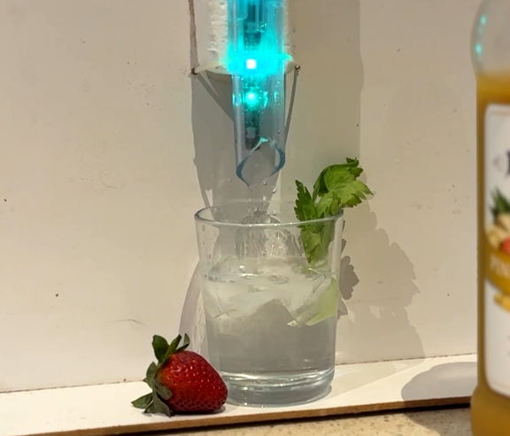

üçπGinAI - Cocktails mixed with generative AI
Posted

üçπGinAI - Cocktails mixed with generative AI
GinAI — a robotic bartender which can make a nice drink given a random collection of juices, mixers and spirits. Real cocktails created and music chosen by OpenAI — all mixed by a RaspberryPi bartender.
I’m bored — can I get a video?
Here’s a quick video of GinAI in action.
Starting at the end
Let me describe the finished project ‚Äî and we can work backwards on how I built üçπGinAIüç∏. The GinAI bartender uses up to four ingredients ‚Äî and when I press the dispense button, OpenAI ChatGPT will ‚Äúcreate‚Äù a drink, describe the cocktail creation and select an appropriate song üéµ.
A row of decorative lights look pretty during the creation and flash üö®once the cocktail is ready. A Google Nest Mini is used as the speaker for both the spoken words üó£Ô∏è and for playing the tunes üé∂.

Cocktail inspiration from ChatGPT
I started my cocktail mixing adventure by simply asking OpenAI for a cocktail recipe from the random spirits and mixers I had available. For example, I prompted ChatGPT to suggest a cocktail with this query
create a cocktail from the ingredients gin, tequila, apple juice and tonic.
Which returns a helpful cocktail mixing recipe along with text instructions as a response.
First experiment with ChatGPT console
I quickly found a few limitations with my initial cocktail creations from the console.
-
OpenAI would sometime suggest a cocktail with an ingredients I didn‚Äôt specify (and didn‚Äôt have). I corrected this with the added instruction to only use ingredients from the provided list. Results were more reliable with prompt instructions ‚ÄúYou do not need to use all of the ingredients. You may only use a maximum of 4 ingredients.‚Äù I can now call myself a prompt engineer üòÄ
-
Recipe suggestions used a variety of measurement unit — such as fluid ounce “a dash of” or other bizarre imperial measurement. I could coerce the output by simply adding the prompt “Only give quantities in metric units. Only give quantities in whole numbers”.
-
There was no consistency with the total volume of cocktail produced. Some may not consider 2 litres of alcohol a problem — but at the very least it overflowed my available cocktail glassware. The prompt instruction to limit to a 250 millilitre volume reduced spillage and excessive drinking
With the prompt creation giving reasobale results, I moved onto building a reliable interface.
Predictable OpenAI responses with function calling
The cocktail recipes created by ChatGPT were going to drive the automated drink dispensing — so I needed ensure OpenAI API would generate a predicable schema for the JSON responses. OpenAI recently added **Function calling** functionality to their API, which I could use to return a consistent JSON response. Function calling is primarily aimed at connecting GPT’s capabilities with external tools and APIs — and converts queries such as “Email Alice to see if she wants to get coffee next Friday” to a function call like send_email(to: string, body: string).
I didn’t need to direct function calling, but I can use the technique (along with a dummy function) to ensure recipes suggested by OpenAI ChatGPT meet a my specification. Enforcing a predictable JSON output means the directions can be easily parsed and implemented by the RaspberryPi liquid dispensing pumps to make yummy cocktails based on the response from a [gpt-3.5-turbo](https://platform.openai.com/docs/models/gpt-3-5) model.
The easiest implementation I found was to use a PyDantic class for my target schema — and use that as a parameter for the method call to “ChatCompletion.create()”. Here’s a fragment of the GinAI Python classes used.
# create a PyDantic schema for output
class Ingredient(BaseModel):
ingredient_name: str
quantity_ml: int
class Cocktail(BaseModel):
cocktail_name: str
description: str
inventor: str
matching_song: str
instructions: str
ingredients: list[Ingredient]
This is a basic class, where an Ingredient class is the ingredient name and a quantity specified in millilitres. The Cocktail class has a list of the Ingredient objects, along with the name, description and appropriate song to compliment the drinking of the coctail
I followed this guide as a great tutorial for using the new function calling feature from OpenAI to enforce a structured output from GPT models.
The OpenAI Python calling logic looks like this (or see the whole openai_util.py module).
completion = openai.ChatCompletion.create(
model='gpt-3.5-turbo',
messages=[
{'role': 'system', 'content': 'You are a helpful bartender.'},
{'role': 'user', 'content': prompt},
],
functions=[
{
'name': 'get_answer_for_user_query',
'description': 'Get user answer in series of steps',
'parameters': Cocktail.model_json_schema()
}
],
function_call={'name': 'get_answer_for_user_query'}
)
OpenAI function calling ensured created recipes conformed to a strict JSON schema. For example, a typical response would look like this.
{
"cocktail_name": "Summer Breeze",
"description": "A refreshing cocktail perfect for a hot day.",
"inventor": "My Bartender",
"matching_song": "Summertime by DJ Jazzy Jeff & The Fresh Prince",
"instructions": "1. Fill a glass with ice.\n2. Combine the ingredients in the glass.\n3. Stir well.\n4. Garnish with a slice of orange.\n5. Enjoy!",
"ingredients": [
{
"ingredient_name": "gin",
"quantity_ml": 45
},
{
"ingredient_name": "orange juice",
"quantity_ml": 60
},
{
"ingredient_name": "tonic",
"quantity_ml": 15
}
]
}
With cocktail recipes consistently created, I could move onto building the drink dispensing hardware.
GinAI — Hardware build
With the interfaces and software roughed out to imagine cocktails, the next job was to build the pouring hardware.
Pumps
I used 4 peristaltic pumps to provide a ‚Äúfood safe‚Äù way to pump the liquids from the drink bottles. These pumps provide a steady rate of flow of liquids when powered. By carefully timing the ‚Äúon‚Äù time for the pump I can precisely deliver the ideal amount of spirits or mixers for the perfect üç∏
A quick search on AliExpress
The pumps are pretty cheap — and provide an accurate way to dispense precise quantities of liquids.
Pumps — straight from the post
The pumps are mounted on a basic wooden frame higher than the tallest bottle. My children helped to build the frame, labelling and installing the pumps.
The important task of adding labels to pumps
A view from the rear show the placement of pumps and liquids. A manual electrical switch allow the pumps to be run independently from the Raspberry Pi (helpful for cleaning).
Rear view of Cocktail maker
The pumps use 12 volt motors. To operate them via the Raspberry Pi I used a 4 Channel 12V Relay Module. This allows the pumps to be switched on and off independently with the 5 volt signals from the GPIO pins of the Raspberry Pi.
 Relay board
Relay board
The Raspberry Pi is mounted with the relay board. The relays switch 12 volt power on and off for the pump motors. The signals for the relay board are taken directly from the GPIO header of the Raspberry Pi.
Board placement
Finally I added the mandatory RGB LED’s for some colourful lighting effects. I used a row of WS2812B LED strip. This was installed behind the final collecting tube with a bit of soldering hidden by white heat shrink tubing.

A great bartended needs to be able to talk and entertain, so GinAI needed a speaker. I used a Google Nest Mini mounted to the frame as a speaker for spoken words and for playing the music.
 Google Nest Mini
Google Nest Mini
üçπ Cheers!
With a bit of coding and a lot of trust in my GinAI bartender I’m enjoying the surprising world of generative created cocktails
Cheers
üõ†Ô∏è Code
The code for GinAI is available at